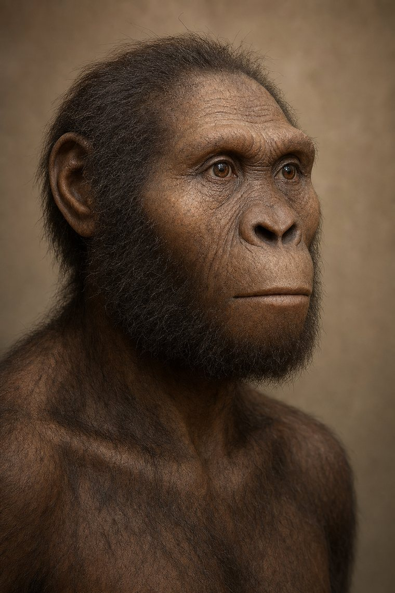
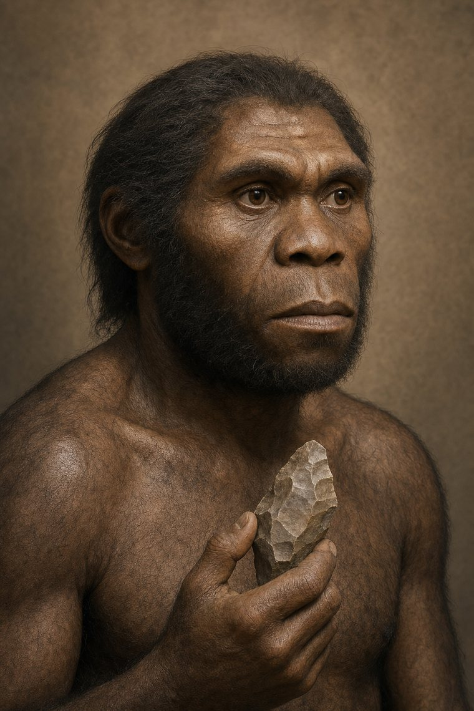
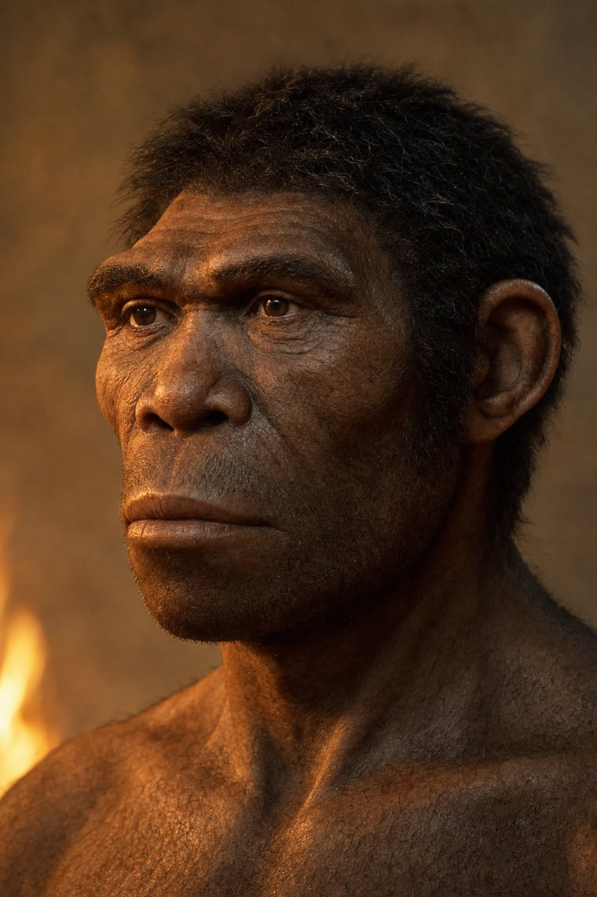
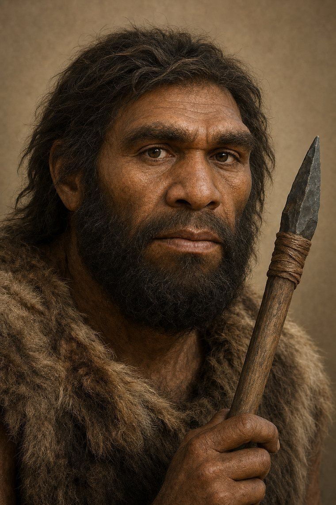
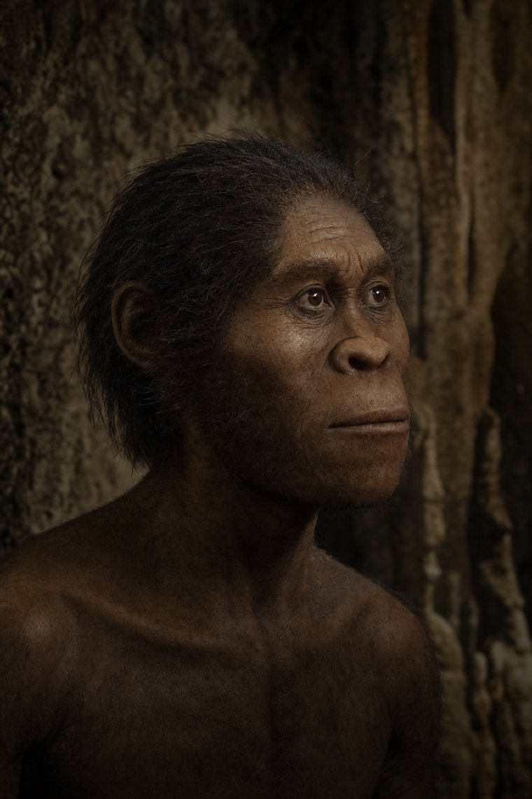
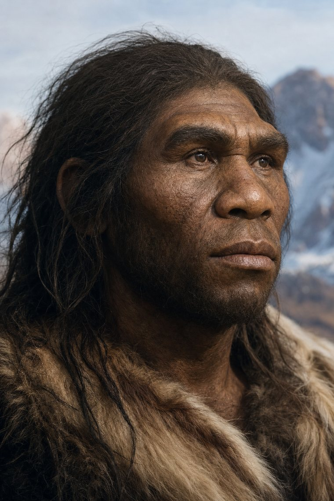

The hominin species
Meet the ancestors and cousins on the human family tree — from Sahelanthropus, seven million years ago, to Homo sapiens today. Each species has its own full report: anatomy, brain, behaviour and the key fossils.













Want to see them side by side? Try the comparison tool, walk the interactive timeline, or read the family tree explainer.
How many hominin species were there?
Thirteen species have full reports here, and that is a deliberately conservative selection rather than a complete list. Depending on which specialist you ask, the hominin family contains somewhere between about fifteen and thirty named species. The disagreement is not really about the fossils — it is about how much variation one species is allowed to contain.
Researchers described as "splitters" treat consistent anatomical differences as evidence of separate species. "Lumpers" point out that living humans and chimpanzees vary enormously in skull shape, and that a handful of fossils from different times and places will inevitably look different without being different species. The same set of skulls can support either reading.
The site at the centre of this argument is Dmanisi in Georgia, where five hominin skulls from a single place and a single narrow time window show a spread of variation nearly as wide as the differences used elsewhere to justify separate species names. That finding is one of the strongest arguments that the field has over-split a smaller number of genuinely variable lineages.
Why the family tree is a bush, not a ladder
The most persistent misconception about human evolution is the marching-progress image: a stooped ape straightening up through a series of intermediates into a modern human. Almost nothing about it is accurate.
For most of the last four million years, several hominin species were alive simultaneously. Around 1.8 million years ago in East Africa, Homo habilis, early Homo erectus and Paranthropus boisei shared the same landscapes. As recently as 50,000 years ago the planet held Homo sapiens, Neanderthals, Denisovans, Homo floresiensis and Homo luzonensis. A world containing exactly one kind of human is a very recent and very unusual situation.
Most of these species were not our ancestors. Paranthropus boisei and Homo naledi are cousins on branches that ended; the robust australopiths were successful specialists for over a million years before dying out. Being a dead end is the normal outcome, not a failure.
The branches also rejoined. Ancient DNA has shown that Homo sapiens interbred with both Neanderthals and Denisovans, and that Neanderthals and Denisovans interbred with each other — the Denisova 11 individual had one parent from each group. A strict tree diagram cannot represent that; a braided stream is the better image.
How to read these species pages
Every report follows the same structure: an overview, anatomy, brain and cognition, behaviour and culture, the key fossils by specimen number, how the species relates to us, the discovery history, and the debates that are still open.
That last section is the one worth reading closely. Human evolution is a field where major claims get overturned regularly, and a page that presents only settled conclusions would misrepresent it. Where the evidence is genuinely contested — whether Sahelanthropus is a hominin at all, whether Homo naledi buried its dead, what Paranthropus actually ate — the reports say so and explain both sides rather than picking one for tidiness.
Brain volumes and heights are representative adult figures, and the ranges are wide where a species is known from very few individuals. The reconstruction portraits are interpretive illustrations: skeletal proportions are constrained by fossils, but skin tone, hair and soft tissue are informed guesses.